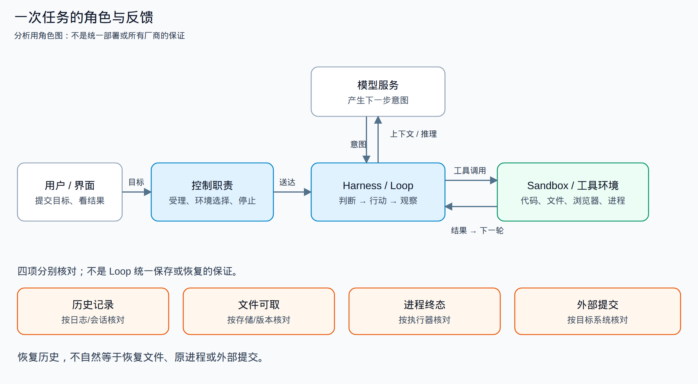
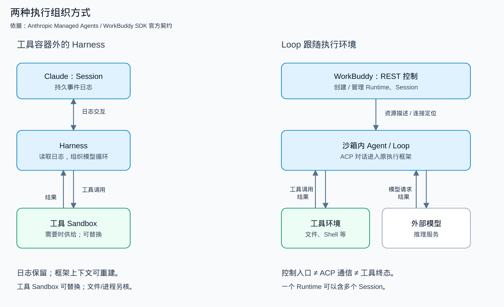
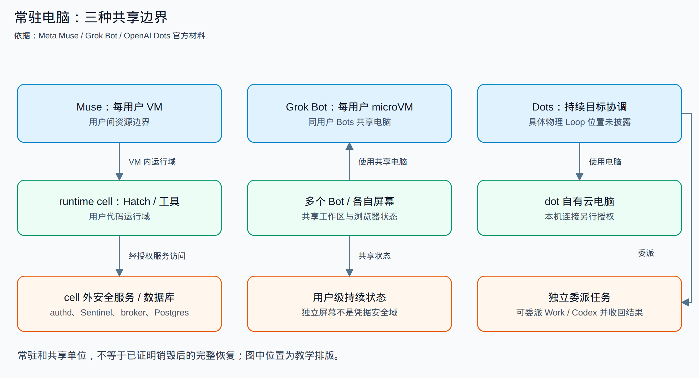

把代码库交给 Agent，关掉浏览器，几分钟后再回来检查修改——这件事已经不只是一次聊天。后台必须记住你交付了什么，把任务送到一处能够运行代码的环境，并在执行结果回来后继续判断。要是环境退出，它还得决定：重建电脑、继续会话，还是明确告诉你这次工作已经中断。
不同产品都可以给出类似的界面，却没有相同的内部结构。Claude Managed Agents 把会话日志、执行框架和工具沙箱分成三层；WorkBuddy 用 REST 管运行资源，用 ACP 与沙箱内的 Agent 对话；Muse、Grok Bot 和 OpenAI Dots 则把跨任务保留的电脑放到了产品中心。这个差别决定了什么可以共享、什么需要重建，以及停止按钮到底停止了哪一部分。
本文比较 Kimi、Claude、Codex、DeepSeek、阿里千问及 AgentRun、腾讯 WorkBuddy、Manus、Meta Muse、Grok Bot 和 OpenAI Dots。资料核对时间为 2026 年 10 月 12—13 日。其中“Grok dots”未查到可确认的正式别名，以下按官方名称 Grok Bot 研究；Muse 指 Meta 的个人 Agent，而不是同名模型或视频服务。
本文面向正在搭建或接入异步 Agent 服务的工程师，重点纠正一种误判：聊天、Sandbox 和 cancel/resume 接口齐全，不等于任务已具备完整执行与恢复能力。
我们结合官方架构说明、公开客户端与 SDK、第三方历史观察，以及 REA 对本机取得制品的分析。它们支持的是不同层次的认识：官方文档说明产品契约，客户端显示请求与本地判断，受控实验验证有限运行路径；没有取得的闭源云后台不会用猜测补齐。全文图源与每条依据的范围放在文末。
一次任务怎样完成
先把三个容易混在一起的角色分开。
模型负责产生下一步意图。 它读取目标、历史和工具结果，可能选择修改文件、运行测试、查网页，也可能直接结束。模型本身不会因为返回了一个工具调用，就自动拥有文件系统或浏览器。
Harness 负责把判断变成连续工作。 这里的 Harness 指执行框架：组织上下文、请求模型、解释工具调用、等待结果，再把结果放进下一轮。本文把这段“判断—行动—观察”的循环简称为 Loop。它既可以在工具环境里，也可以在环境外；推理服务还可能位于另一套基础设施。
Sandbox 提供实际操作的环境。 文件、Shell、浏览器、软件依赖和运行进程在这里。Sandbox 是环境角色，不是固定技术名称：产品可以用容器、microVM、完整 VM，或者对本机进程施加限制。只有知道它隔离的是谁与谁，才知道“有沙箱”意味着什么。
从用户提交目标到收到产物，还需要两个方向的协作：一边受理任务、选择或创建环境、记录状态、处理停止和回收，这是控制面；另一边传递对话、工具调用、输出流和文件，这是执行与数据路径。两组 API 分开，未必就运行在两组服务里；两个服务分开，也未必构成两个安全域。

共同工作模型：模型产生意图，执行框架形成闭环，环境提供操作能力；各产品不必共置这些角色。

图中最重要的不是模块数量，而是闭环：工具结果必须回到下一轮判断，产物与状态必须有明确去处。 实现一个“创建沙箱”接口，只解决了工具有地方运行；实现一个“查询任务”接口，只解决了用户有地方看状态。它们之间仍需要执行框架接线。
再看“恢复”。重新打开界面能看到历史，说明消息被保存；下载到上次生成的文件，说明文件仍可取；继续运行上次启动的服务器，需要进程状态；确定上次付款没有重复发生，则需要业务效果的对账。这是四种不同的承诺，不能用一个 resume 字段全部代替。
例如，历史可见、文件可下载、新环境 ready，仍不等于原任务可以安全重跑。若旧工具终态和此前 Git push 的远端结果未知，应先核对，再决定哪些步骤继续或重放；这是设计判断，不是本文已经在各家云端完成的对账实验。
Claude：把会话、脑和手分别替换
Managed Agents 的三层分离
Anthropic 的 Managed Agents 架构说明把 Session、Harness、Sandbox 明确拆开。Session 是持久事件日志，记录消息和行动；Harness 读取日志、组织模型循环；工具需要环境时，才供给 Sandbox。Harness 在代码执行容器外。
这使故障不必沿同一边界扩大。Harness 退出，可以让另一份 Harness 从 Session 事件重新建立上下文；工具容器失败，可以把失败作为一次工具结果返回，再由模型决定怎样继续。它不要求为了重启“脑”同时恢复原来的“手”，也不要求会话存在期间一直占着同一个工具环境。

两种模式的主要差异是 Loop 与工具环境的边界；此简图未填造底层队列、VM 栈或恢复协议。 两个案例，不是互斥或穷尽的选型。

但拆开并非免费：框架必须把工具输入、结果与会话事件关联起来，还要处理环境丢失后的文件供给。事件日志能重建对话上下文，不会自动重建工具进程，更不会撤销已经发出的外部请求。这里的价值是让不同状态可以分别管理，不是把所有恢复问题一次解决。
一个假设的提交窗口能说明限制：工具已经 Git push 成功，结果却尚未进入持久日志时，Harness 退出。新 Harness 从日志重建上下文，也无法仅凭日志确定远端结果和旧工具终态。公开材料没有披露把这种外部提交与日志记录原子关联的协议，不能因此保证该步骤安全重放。
凭据也沿这一结构分离，但 Git 与 MCP 是两条路径。官方说明中，Git 的仓库访问 token 在初始化时用于 clone，并接入本地 remote，让沙箱内 push/pull 不需要 Agent 自行处理 token；MCP 的 OAuth token 则存于沙箱外 Vault，专用代理依据 Session 关联取得凭据并调用外部服务。Harness 不拿到真实凭据，但不能把两条路径都画成同一个 MCP 代理，也不能扩大成所有网络请求采用相同过滤。
Claude Code cloud 是另一种路径
Claude Code cloud environments以 Session VM 提供执行环境。环境配置负责仓库、初始化脚本、网络和秘密。VM 可以空闲暂停，也可能被回收后重建；初始化文件缓存是准备优化，不是正在运行的所有进程的检查点。
截至本次核读，network secret 适用于 Pro／Max 的 Anthropic 托管环境，不适用于自托管环境：VM 外 agent proxy 按目标主机附加凭据。GitHub 使用另一专用 proxy；setup 在 agent proxy 启动前执行，Anthropic API、公共包仓库与 telemetry export 也不接收这种 secret。普通变量进入命令环境后可以被命令读取，不能因 network secret 使用代理，就认为两者有相同边界。
GitHub proxy 的官方契约还有资源限制：API 请求限于 Session 附属仓库，拒绝分支删除和非分支 push；它不限制 push 更新哪条分支，具体保护要依赖 GitHub 规则。这是官方描述，不是本轮完成的动态授权测试，也不同于仅按主机附加的 network secret。
自托管模式又把执行搬到组织管理的主机：Anthropic 控制面保留会话与队列，Runner 出站轮询、领取租约，再启动 Claude Code 子进程。它适合把仓库和执行留在组织网络内；相应地，主机权限、容量和本地文件保护也由部署方承担。同一个 owner 下多 Session，并不自然形成文件硬隔离。
我们取得固定 2.1.296 的原发布 Runner，在无外网的研究命名空间里实际启动，使用合成控制服务和 Python 子进程，观察到登记、轮询、worker epoch、FD3 活动和停止路径。取消分配、启动超时、drain 与 epoch 拒绝按有限场景运行。另用合成秘密确认两项父进程环境变量没有传给子进程，但同用户可读的合成秘密文件仍能被子进程读取。
这补到了原 Runner 的本机监督机制，没有运行真实 Claude Loop、Anthropic 租约服务或产品 VM。研究中外加的 bwrap 是实验约束，不是 Runner 自建的产品 Sandbox；本机变量过滤也不是整台主机的凭据隔离。
Codex 和 WorkBuddy：环境复用不等于任务共享
Codex Cloud：复用准备，隔离工作区
Codex Cloud把发布的 Environment 与每次任务的工作区分开。用户选择仓库和环境配置，任务在独立工作区处理代码；浏览器关闭后，云任务仍可继续。
环境文档区分准备阶段和 Agent 阶段。准备阶段可以联网安装依赖；setup secrets 在进入 Agent 阶段前移除。Agent 网络默认关闭，也可以配置联网范围。环境缓存用于减少重复初始化，恢复时可以运行 maintenance，而不是承诺永久保留原任务的每个进程。
这里真正可复用的是“怎样准备一处工作环境”以及可缓存的准备结果，不是让不同任务必然写同一份活工作区。模型 API、环境内命令与用户看到的任务结果仍需由执行框架组织；官方资料没有给出完整云队列、worker 租约或 Loop 相对容器的进程拓扑。
公开 Codex 0.153.0 源码可以核对客户端任务接口和执行库。我们对对应原 ELF 做了受限 REA 函数分析，并实际运行原 exec-server：观察单连接占用、同一存活服务重新连接、执行终止、脱离连接后的有界保留，以及指定写入 ID 的重复处理。
这些结果解释了一种本机执行器怎样管理连接与子进程。它没有经过完整 core 入口，没有请求产品 OS Sandbox，更没有证明 Codex Cloud worker 使用同样实现。原生分析也保留了超时、函数范围与不返回假设的限制，不把反编译伪代码当原始源码。
WorkBuddy：REST 管资源，ACP 进入 Loop
腾讯 WorkBuddy SDK 文档明确区分两条路径：REST 创建和管理 Runtime、Session 等资源；ACP 连接 Runtime 中的 Agent，完成对话与流式结果。Agent 在沙箱内运行，再向外部模型服务请求推理。
Runtime 是独立 Linux 沙箱，可以容纳多个 Session。Session 区分对话上下文；是否共享文件，仍要看 Runtime 和工作区的组织。调度器可以复用 Runtime，再创建新的 Session；AgentOS API还提供 Checkpoint、Version 与恢复操作。接口提供恢复能力，不代表快照一定含全部进程内存，也不代表会回滚外部系统。
这条模式容易直接使用现有 CLI：资源控制面可以复用已有执行框架，再把通信接到执行端。但平台仍要承担任务受理、资源绑定、身份与凭据、版本适配、停止回收和故障处理，ACP 接通不代替这些责任。代价是两种状态必须协调——“Runtime 已创建”不等于“ACP 已连通”，ACP 连通不等于一次 prompt 已执行完毕。REST 认证、ACP token 和模型 key 也是不同用途的凭据。
所读 SDK 文档标注 0.3.4，而本机取得的发布 SDK 为 0.3.8；两者不作为同版本验收。我们以固定 SDK 0.3.8 → CodeBuddy 2.164.0 原 headless ACP → 原 Loop 在本机接通，模型与 Runtime 控制描述使用合成服务。原 Loop 完成一个本地 Read，文件内容以同一工具调用结果回到模型请求。这个正常样本由同 Session／conversation 的请求、原 Read 完成日志和同 tool_call_id 的文件正文回传人工交叉核对；自动关联断言尚不完整，topic-only、wrong-call 与 late-error 负例未运行。随后另一次仅模型持续流的 prompt 收到 cancel，流连接关闭，SDK 返回 cancelled。原 SDK 直接连接还遇到公开客户端 marker 检查，显式 custom fetch 加 marker 后才进入该链路。
官方契约与固定版本本机机制分别成立，本轮未确认 WorkBuddy 云端采用这一版本和启动组合。这个实验不是 WorkBuddy 云部署复现：Runtime 描述是合成的，原进程的 SandboxPolicy 本例关闭，外层隔离是研究约束。Read 在取消前已经完成，不能用随后模型流的取消证明有副作用工具、子任务或远端计算全部停止。它补充证明了这组固定版本在明确适配后接通原 ACP、Loop 与本地 Read 回路，不只是看见接口名字；不能据此推出所有执行框架必须采用 ACP。
补到启动链：本机 sidecar 与云后台仍是两件事
接通 prompt 之后，还要回答谁启动执行器、何时能把入口交给客户端。同一 CodeBuddy 2.164.0 原 headless 中可见两条本地通道：一次性凭据 bootstrap 与运行入口 ready 上报。我们用合成 sidecar、控制信息和密钥运行原 CLI：有效 fields bootstrap 后上报的端口可通过 health；错误 Session bootstrap 触发原 CLI 门禁失败，错误 ready 回执 ID 使 CLI 异常退出，后者未探测 health。这验证了有限启动接线，没有发送模型 prompt 或工具任务；fields ready 也不等于实际密文持久化、整文件保护或用户授权已经验证。
另从腾讯公开更新接口取得标记 5.5.6.38337834 的 WorkBuddy Desktop 包，发现 daemon、SidecarManager、SidecarServer 与 local/cloud Conversation 分路代码。但下载字节的 SHA256 与更新接口声明不一致，原因未解释；内部 ASAR 摘要和 CDN MD5 只能说明同源一致性，不能解决矛盾。因此这份包只静态解析，未安装、未运行，发布身份仍未认证。
所见代码的 local provider 经 hook 选择预热或冷启动；sidecar 按传入命令创建本地进程，而不是自身固定某一 CLI。云 provider 另读 /console/as 定位信息，再作为 ACP 与文件接口客户端访问远端。包内 CLI 顶层版本为 0.0.0、自定义发布字段为 2.137.1，不是前述独立 2.164.0 实测对象，不能继承其运行结果；也没有取得 /console/as 与 AgentOS /v2/agentos 属于同一部署的服务端证据。
这个静态候选还有两处值得借鉴的边界：ready 字段接受、Session 写入实际端口、host health promotion 是不同完成点；session.kill 可能无操作返回；匹配目标时尝试终止，清理内存记录并返回控制 ACK，同时后台等待退出或尝试强杀，仍不保证死亡确认。因此“列表里没有了”并不证明进程树已退出。云端选择新的 ACP Session、重连消息流或读到文件，也不证明旧工具停止或同一 VM 已恢复。桌面代码补充了具体机制，不把闭源云控制器的未知填掉。
Manus：临时任务电脑与常驻电脑各管一类工作
Manus 的 context engineering 文章描述 action—observation 循环和文件外置上下文：模型采取动作，环境返回观察，下一轮继续判断；长材料可以留在文件中，需要时再读取。
默认 Task 使用临时 Sandbox。官方 Sandbox reset 说明指出，重置可能丢失沙箱文件，而会话历史仍保留。另一产品 Cloud Computer则是一台跨任务使用的常驻 Ubuntu 电脑，保留文件和安装工具，适合连续工作。两者不是相同资源套上两个名称。
这区别回答了一个实际问题：如果任务只是生成一份交付文件，环境可以在交付后回收；如果要持续维护网站、保留软件和工作目录，电脑本身也成为用户资产。常驻减少重复准备，却要承担长期容量、状态更新与恢复管理。
公开客户端中，我们追到 Sandbox REST，以及 Socket.IO 连接、Session 重加入、事件游标和独立作业的 start/stop 响应匹配。离线回放能核对某条响应是否与请求对象匹配，不能认证后台已经执行该动作。消息重新加入解决的是重新看见进展，不是重建已丢失的电脑。
Task 生命周期与后台作业也应分别观察：主 Agent 停止后，不能只凭主状态推定所有背景作业结束。至于具体 VM 栈，E2B 有 2025 年 5 月的客户披露，这是供应方历史依据，不足以覆盖 2026 年所有 Manus 环境。
Muse、Grok Bot、Dots：电脑变成持续工作的一部分
与一次任务的临时工作区相比，持续 Agent 要处理跨天目标、登录状态和用户自己的应用。常驻电脑让这些状态有了归属，但三家的共享和授权单位不同。

常驻电脑的共享单位不同：Muse 分用户及 cell 安全域；Grok Bot 同用户 Bots 共享；Dots 可委派独立工作区。 Muse 披露具体请求授权后替换 surrogate；代理保密与动作授权分别理解，本轮未验证端到端权限绑定。

Muse：VM 里面仍然需要安全分域
Meta 的 Muse 安全架构给每用户专属 Linux VM，Hatch 在 systemd-nspawn runtime cell 中运行用户工具；authd、Sentinel、Postgres 和 CDP broker 等服务位于 cell 外。
为什么已有 VM 还要分内外？VM 隔开的是不同用户，cell 进一步把模型可运行的代码与凭据、授权服务分开。工具可以请求访问应用，却不必直接拿到真实 OAuth 凭据。Sentinel 对具体网络请求作授权判断，再将 surrogate 替换为真实凭据；浏览器通过 broker，特权操作通过 privsep。这不是给工具一个能访问所有账户的永久通行证，而是把授权判断保留在另一安全域。
Postgres 的 durable app state、workspace 和 credential store 也不是同一份状态。VM 常驻并不能推成主机销毁后原子恢复，官方文章没有给出完整快照一致性与 RPO。Confidential VM 在该发布材料中属于计划，不能写成已部署保证。
第三方有 Muse Architecture Tour，另有非官方社区快照。我们对快照中的 execd 做 REA namespace 分派分析：原表项和指令提供了有限 helper 调用线索，未执行内核切换。快照摘要一致不认证 Meta 发布主体，这部分只作实现线索，不提升官方安全结论。
Grok Bot：多个 Bot 共享的是同一用户电脑
Grok Bot 官方文档说明，每用户有持久 Firecracker microVM，同用户的 Bots 共享这台电脑。Computer and apps进一步区分共享工作区、浏览器与各自屏幕。
独立屏幕方便不同 Bot 同时操作，但屏幕不是凭据安全域。一个 Bot 的浏览器登录和命令行凭据可能供同账号其他 Bots 使用。这一设计按用户复用准备好的电脑，不按每个 Bot 重做完整登录与工作区；代价是不能把 Bot 当成互不信任的租户边界。
文档也区分正常更新中的保留状态与从保存 snapshot 的 Reset，最近变化可能丢失。OAuth connector backend 与浏览器内会话是不同凭据路径。本机电脑连接另行授权，不能把云 microVM 的边界套给本地执行。
固定 0.70.2 桌面制品中可见云控制、Box gateway 条件路由与本机桥接。内部 coordinator、harness 或 temporal 标签能帮助找到客户端职责，却不能确认主 Loop 的云部署位置或中央工作流采用哪套实现。
OpenAI Dots：持续目标可以委派独立任务
Dots 的电脑与应用说明把 dot 自有云电脑、本机连接、cloud threads 和 Codex 委派分开。持续目标不需要和所有子任务共用一个活工作区；可以保留协调上下文，把具体工作交给独立任务，再收回结果。
隐私与安全说明还把主动研究的只读权限、执行动作的规则和 private sign-in 区分开。登录时模型暂停，让凭据直接进入浏览器，是一个特定交互路径；它不是宣称常驻电脑里的所有历史信息都对工具不可读。
App 授权与 ChatGPT、Work、Codex 的关系，以及 dot context、Memory、Library 文件和 Codex threads 的保留，要按各自对象理解。删除 dot 不等于删除已经生成的所有产物。取得的 ChatGPT 26.1007.30912 包可静态核对 dot 控制、本机 executor 和消息续接。其字节与内部签名一致不等于独立认证发布主体或线上启用，官方产品说明另有来源；而同包内部 aeon、durable 或 Codex 名称，不足以证明云服务共置。具体 hypervisor、Loop 位置和快照回收策略仍未披露。
Kimi、千问、DeepSeek：先分清消费产品与基础设施
这三家最容易出现一种研究误差：找到同厂商的 SDK、开源训练平台或文件系统，就把它们接到消费端产品后面。它们都提供有价值的机制依据，但“同厂商”不是部署链路。
Kimi：对话、产物、环境是不同对象
Kimi Agent支持云端后台执行，Swarm描述委派和独立上下文。前端原模块可读到 Goal 管理，ChatService 的流、续接与取消，以及 Build App、preview、database、storage 和 secret 的具体调用。
这说明用户看到的不只有一条聊天流，还包括可以独立查询、编辑或发布的产物资源。appId、资源 ID、版本和文件引用各有职责：拿到预览 URL 不等于拿到了 task Sandbox 的完整身份，重新订阅聊天也不等于恢复工具进程。协议里有 EnsureEnvironment(preset, chat_id, agent_id, ttl) 与文件版本／etag，但本轮没有追到对应真实调用方和后台供给，不能把字段解释成已验证的环境基数、TTL 或恢复保证。
另取得社区作者归档的 Kimi K2.5 执行端代码，固定提交日期为 2026 年 3 月 29 日。其中 FastAPI 提供 kernel 管理和连接配置，代码执行另走 Jupyter 通道，并不是一个 HTTP execute 路由。我们在无外网的研究环境中运行未改社区原件：HTTP 取得配置后，由分析者 Jupyter client 执行代码；指定变量在同 kernel 保留，interrupt 返回关联的中断结果，reset 后变量消失而指定工作文件仍可读。
退出清理暴露了比“reset 成功”更具体的边界：两次本机运行都观察到两份初始 kernel、API 管理其中一份；其中一次由分析者发送 TERM、服务退出后的短观察窗口仍有另一份 kernel 存活，再由分析者另行终止。它说明本例中管理对象与进程清理要分别核验，不证明生产环境也有同样基数或缺陷。社区来源没有独立认证为 Moonshot 发布物，本机依赖和隔离由分析者提供，执行通路也没有测试原包装方法的全部超时分支；这些结果不能接成当前 Kimi 云后台或整机恢复保证。
另两组材料能补充存储，却必须分别看。
第一组是 第三方 Kimi 沙箱报告，作者自述观察于 2026 年 8 月 11—12 日。它报告了容器工作区、根 overlay 与 /mnt/agents 的 fuse.portal 挂载，以及若干文件操作现象。具体实验执行者、独立实例和会话数量未提供；译稿与合并稿不是独立复测。这是历史作者报告，不是本机 REA 实测。
挂载中的 user_id=0 是 FUSE mount owner，不证明 daemon 当前身份或宿主 root；可见进程表里没找到 daemon，也不能定位它必在 host 或 sidecar。短 fsync 返回不能说明异步上传或远端耐久。文件工作区线索很有价值，但不能从几条字段推成完整存储服务。
第二组是 PingCAP CTO Ed Huang 于 2026 年 5 月 14 日发表的 Kimi K2.6 建站数据库披露。它描述每租户逻辑完整的数据库视图，底层共享分布式 KV 和对象存储，没有每租户专属物理数据库实例。建站代码生成之后，网站及数据库仍需要服务，这与 Agent 的一次生成过程是不同职责；两者具体生命周期绑定未完整披露。
这不是 FUSE → TiDB 的接线证明。五月建站数据库与八月工具文件挂载没有共同部署、任务或会话标识；供应方的成本和供给数字也没有在本轮独立评测。Kimi Claw 的专属 OpenClaw 环境、Kimi Work 的本地 Goal，以及 AgentENV 训练平台各自有依据，不代填普通消费端 Swarm 后台。
千问与 AgentRun：消费请求可见，平台机制另算
千问消费端固定 4.9.6 原模块可追到任务 HTTP 请求、查询／取消和 RMB worker 通知。通知到达后补查任务，是为了让页面取得最新状态；ACK 和消息游标不是任务成功或执行恢复的证明。Loop、工具 worker、环境供给、凭据代理与生产授权仍没有从这些客户端中还原。
千问 AI Managed Agents则公开 Agent、Environment、Session、Event 的平台契约；独立 Sandbox 服务描述 template 创建、暂停保留文件与内存、恢复与释放。阿里云 AgentRun是另一平台产品，涉及运行、网络、存储与治理。这些可以用于理解供给方式，不能在没有关联证据时画成千问消费端的底层。
原 AgentRun SDK 中，管理端创建／获取／停止资源，数据端调用资源 endpoint；应用 HTTP handler 再通过模型或 Sandbox 工具组织执行。资源 ID、访问 token 和 endpoint 要与具体请求关联。受控回放还显示一个关键区别：HTTP 请求断开不必然停止一个未使用 signal 的应用 callback；重新创建资源并 retry，也没有自动对账旧调用的外部效果。这里是在指定输入上的 SDK 机制观察，不是阿里生产事故。
DeepSeek：模型调用、DSH 和 DSec 不能合成一个网页后台
DeepSeek Tool Calls返回工具意图，函数由调用方执行。公开 DeepSeek Harness的 DSH 是本机执行框架，包含进程约束、文件写入与日志；它不因此成为 DeepSeek 网页的用户云电脑。本轮当前聊天入口采集受限，历史前端也不用于认证当前部署。
真正有完整基础设施披露的是训练／评测场景的 DSec 论文，版本日期 2026 年 9 月 19 日。它组织管理服务、placement、节点运行时与多种 Sandbox backend，使用 3FS backing 和本地写层，让大量训练环境可准备、暂停和复用。GPU trainer 与环境执行职责分离，论文所述 V4.1 worker container 加 Agent Sandbox 在 GPU pool 外，但不是把每个 Agent Loop 都移到 Sandbox 外。
其暂停／恢复包含不同 backend 的处理：容器冻结，或 microVM 内存 snapshot、结束 Firecracker 后再 resume；增量磁盘环境又是另一层状态。论文描述的 trainer 抢占重连，不足以保证 worker 或节点丢失后所有工具副作用恢复。评测范围也没有独立认证每项集成恢复机制。DSec 适合比较训练基础设施，不适合补画消费网页。
可借鉴的原则是把任务权威状态与可抢占计算分开，但 GPU pool 外不等于故障节点外。企业仓库任务换节点续跑，还须确认节点外的一致恢复点、新旧执行者与任务代际绑定、旧权限及在途请求约束，并核对未决的 Git push。这些是迁移前提，不能由共享镜像、snapshot 方法或正常 pause/resume 认定已经满足。
怎样把这些差异用于自己的设计
先把主要差异压到一张表。表中“未知”是研究范围内未确认，不是产品不存在或不安全。
| 对象 | 控制与 Loop | 环境／共享单位 | 状态的关键边界 |
|---|---|---|---|
| Claude Managed Agents | 日志、Harness、Sandbox 分离；Harness 在工具容器外 | 工具按需供给 | 会话可重建，不自动恢复文件与副作用 |
| Claude Code cloud／自托管 | 托管 Session VM；自托管控制队列 → Runner → 子进程 | Session／组织主机；同 owner 可多 Session | VM 重建、会话历史、本地文件分别处理 |
| Codex Cloud | 独立任务；完整云 Loop 拓扑未知 | Environment 配置复用，任务工作区独立 | setup 缓存不是进程检查点 |
| WorkBuddy | REST 管资源，ACP 进入沙箱内 Loop | Runtime 可含多 Session | 上下文隔开不等文件隔开 |
| Manus | 异步 Task 与工具观察；物理 Loop 位置未知 | 临时 Sandbox／常驻电脑分开 | reset 可丢文件，历史仍保留 |
| Meta Muse | 用户 VM 内 cell 与 host 安全服务分域 | 每用户 VM | workspace、数据库、凭据分别管理 |
| Grok Bot | 云电脑与本机连接分开；云 Loop 位置未知 | 同用户 Bots 共享 microVM | 屏幕不是安全域，reset 可回退 |
| OpenAI Dots | 持续目标可委派独立任务；物理部署未知 | dot 自有电脑与委派工作区 | context、文件、threads 不同对象 |
| Kimi／千问消费端 | 客户端控制与结果流已见；后台部署未知 | 不能由协议字段推定 | 消息续接、产物版本、环境恢复分开 |
| 千问 AI／AgentRun | 平台契约与 SDK 接线 | 独立托管环境／资源 | pause、release 与业务恢复不同 |
| DeepSeek DSH／DSec | 本机框架／训练管理与运行时分别研究 | 本机进程／训练 Sandbox | 本地日志、环境快照与消费端无直接等同 |
针对同一个异步仓库任务，若服务端进程可以脱离浏览器持续工作，日志和目录可保留，并允许故障后核对结果再重建，“单个执行进程＋持久任务日志＋独立工作目录”可以作为简单基线，不必先拆服务。它仍需确认停止和外部提交，目录也不是完整安全隔离。只有确实需要分别替换框架与工具环境、独立管理生命周期，或远程供给及复用多个 Runtime，新增分层才有具体用途。
这里没有一个通用的“最好架构”。如果执行框架能把工具当远程能力调用，三层拆分便于独立替换和按需供给，但要承担事件、文件与结果关联；如果复用成熟 CLI，像 WorkBuddy 那样让 Loop 跟随执行环境，接线更直接，但必须把资源控制状态与通信状态分开。若用户需要持续登录和跨天工作，常驻电脑有明确价值；若只是短任务交付，长期占用与状态维护的收益则需要另算。这是依据机制作出的设计分析，不是厂商间性能或成本评测。
对一个自己的 Agent 平台，最值得先明确的是三个边界。
第一，Session 绑定哪一层资源。 它是一段日志、一份工作目录、一台电脑，还是三者的关系？复用 Runtime 时，如果不同 Session 的工具在同一文件树工作，就不能只凭对话 ID 宣称隔离。
第二，哪类凭据需要进入执行环境。 setup secret、模型 key、OAuth 代理和浏览器登录不能用同一个“支持 secrets”承诺概括。允许访问 Git 域名、由代理附加凭据且秘密未进入执行端，并不足以证明某次仓库写入得到任务授权。凭据保密、网络可达、动作授权是三个边界：主体、任务、目标资源和动作的权限关系仍须另行核验。代理在环境外可以减少真实凭据暴露，但仍要把资源归属、目的地与动作权限绑定到每次访问；用户级共享电脑则需要接受同用户工具共用状态的边界。
第三，停止和恢复承诺到哪一步。 停止接收新 prompt、关闭流、结束 Loop、终止工具子进程、停止背景任务、对账外部提交，必须有分别可查的结果。恢复同样先分历史、文件、进程和业务效果，再决定是 resume、重建还是告知用户重新执行。
在仓库任务的例子里，判断也应按步骤进行，不是一律重跑或停住整件工作。先核对文件版本、恢复目录、权限和命令的实际行为，独立目录中已确认无未决外写或共享冲突的步骤才可继续；“读取”“编译”的名称本身不能保证无副作用。再取得绑定原任务／代际的旧工具终态，或核验覆盖相关凭据与在途写请求的旧执行约束。最后，对 push 单独查可关联本次请求、仓库、ref 与提交内容的权威记录：确认成功就跳过，确认未生效且排除冲突才重试，缺证则只保留这一步未决。旧工具停止不撤销此前提交，旧写入约束不证明过去请求失败。远端当前分支不是该次请求的因果收据，业务去重只按其耐久契约覆盖相应操作，也不能代替恢复状态、授权或旧执行约束。这些是验证建议，不是各厂商已经实现的保证。
下面是一组设计验收建议，不是本轮已在各厂商云端执行的实验：断开界面后查询原任务；停止时同时观察主 Loop 与工具；回收环境后核对历史、文件和进程；让一次外部写入在响应前断开，重新连接后检查是否重复。它们比检查 SDK 是否存在一个 cancel 或 snapshot 方法，更接近用户实际依赖的承诺。
REA 提供了什么，以及图源在哪里
本轮先检索 REA 官方仓库与 showcase，未取得针对上述全部云 Agent 的现成 REA 架构报告。可参考的 Notion 桌面案例追踪 page API、preload、IPC 和 main 的剪贴板边界；它展示的是跨应用边界取证方法，不是闭源服务端还原。Muse 和 Kimi 有第三方观察材料，但不能改称 REA 报告。
随后我们取得公开 JS、SDK 和原生制品，用 REA 分析选定原函数／模块，配合独立字段解码和有界本机实验。“下载过 → 解析过 → 原函数运行过 → 云任务运行过”是不同阶段。 这轮没有使用用户真实凭据、付费云任务或登录绕过，也没有通过公开客户端推造后台队列。
读者可下载 32 页组件图集 与 26 页生命周期图集，或下载 逐图目录，选择各产品的 SVG 和独立 draw.io。图中的官方契约、客户端静态观察、本机受控结果、第三方历史报告与未知使用不同标注；图的泳道归类是分析整理，不是生产拓扑认证。正文三张简图用于讲解，完整图集保留更多连接与限制，适合放大查看。
公开来源与阅读范围保存原作链接、版本、日期和证据等级；有限实验摘要记录实际运行范围与未完成项。原二进制、运行日志、模型请求和凭据不随稿公开。
最重要的结论不是某家用了哪一种 VM，而是：会话、执行环境、授权和业务结果分别需要自己的归属与生命周期。 理清这些关系，才知道一处故障应当替换哪个组件，停止按钮该等待谁，以及恢复后用户到底能继续什么。